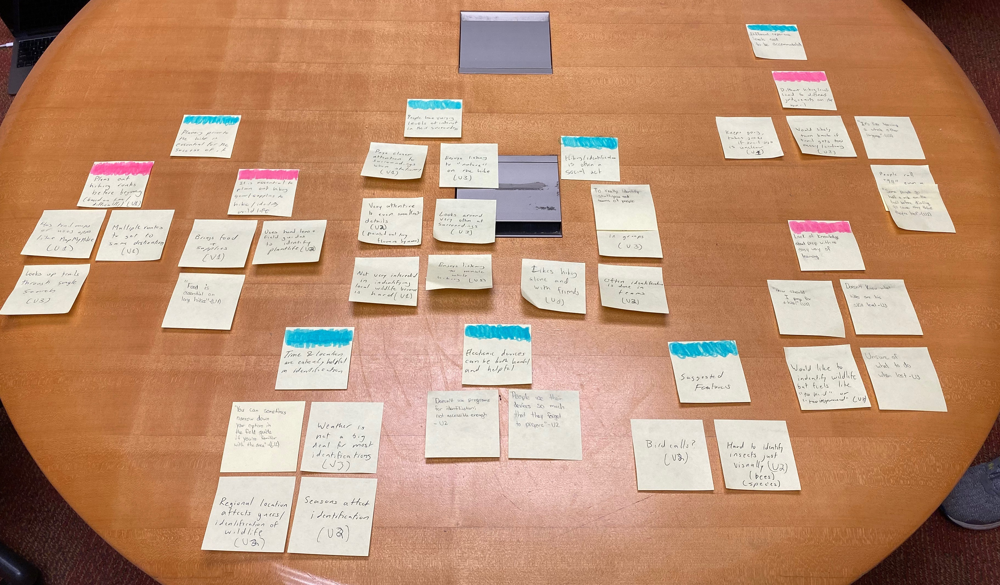
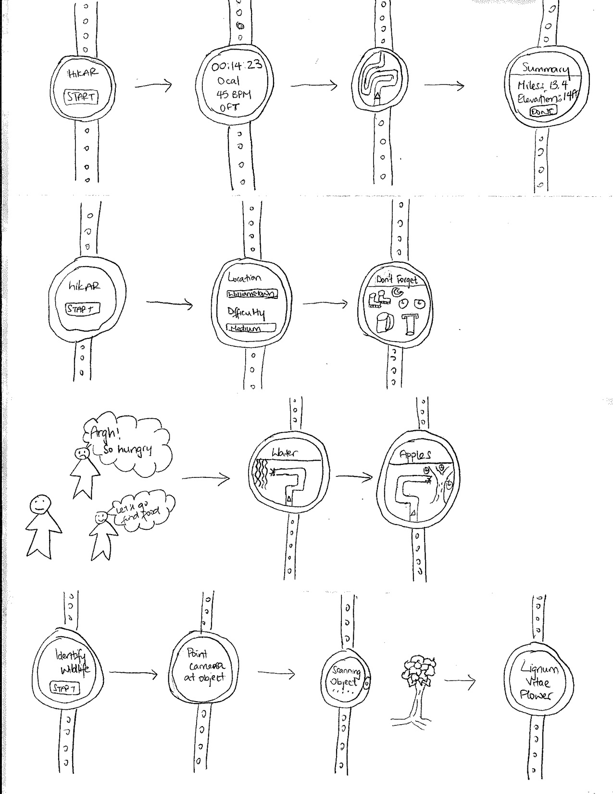
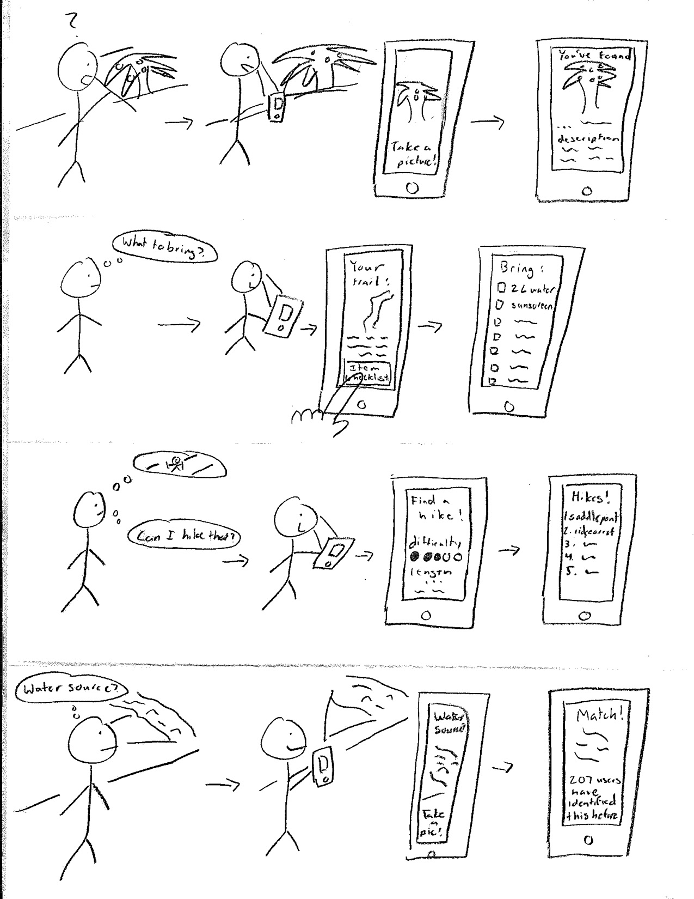
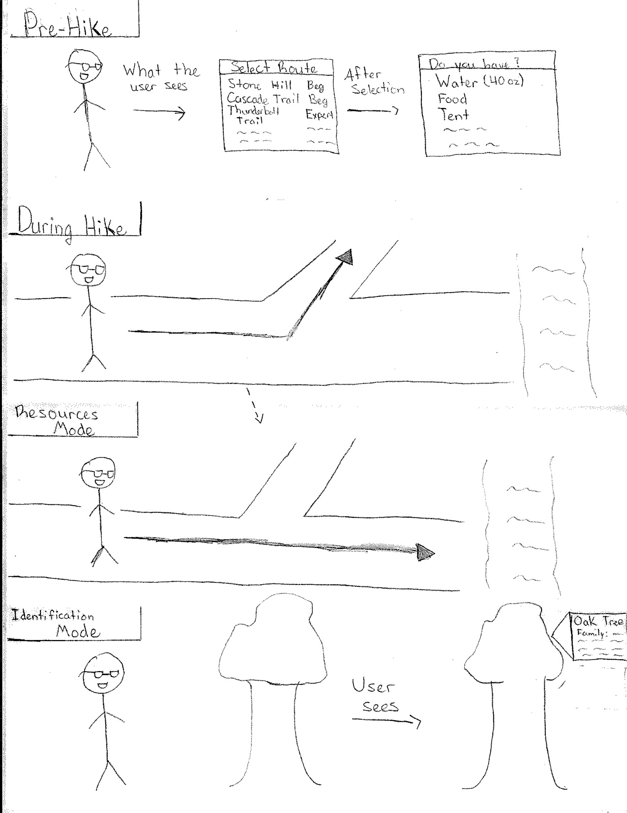
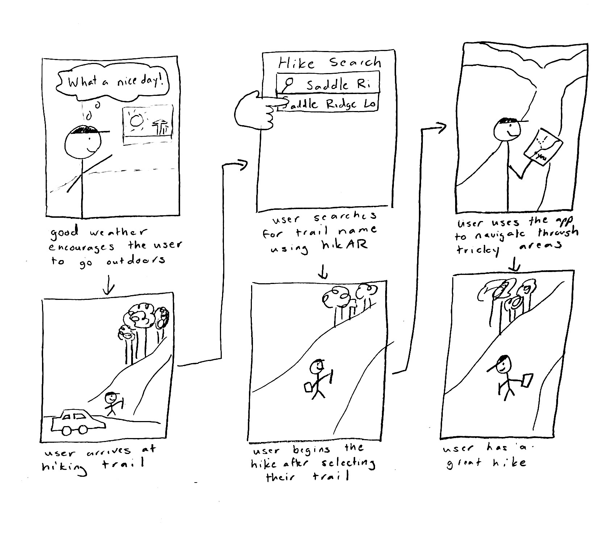
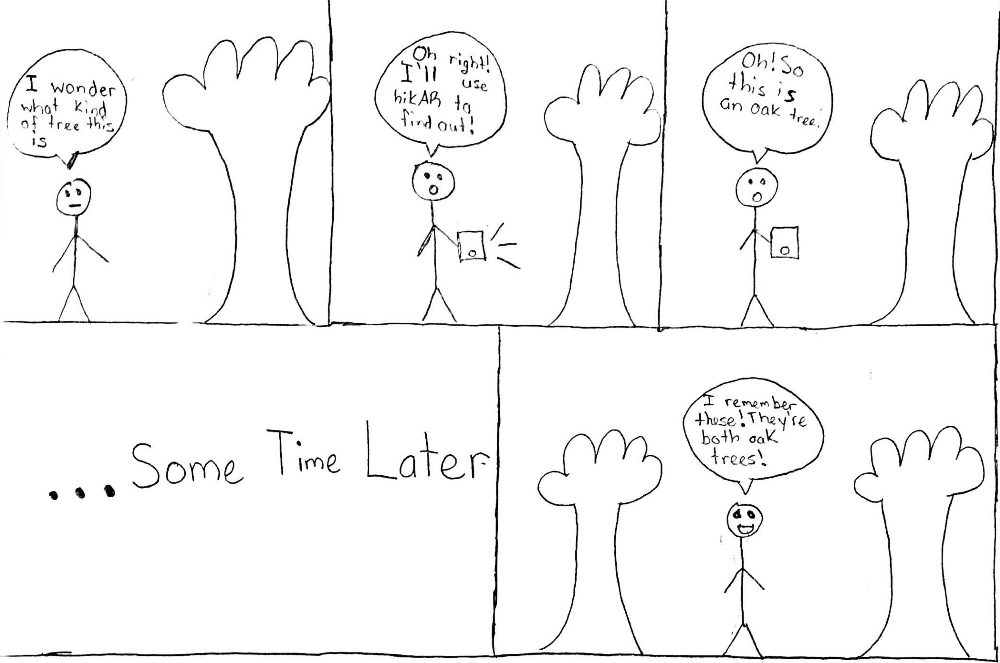

Team Members and Roles
Eric Wang - Designer,Researcher
Gaurnett Flowers - Designer,Researcher
Rudy Crisostomo - Designer,Researcher
Problem and Solution Overview
The life of a hiker is one that is filled with many inconveniences that negatively impact people’s experiences in the wild. Of these problems, one of the most ubiquitous is the lack of a reliable way to navigate on the trails. This problem affects hikers of all experience levels and often prevents outdoor enthusiasts from exploring and going out on new trails for fear of getting lost on an unfamiliar path. Another issue is the inability to have questions about local wildlife answered when out in the wild alone. This inhibits the level of interaction that people can have with their environment while out on the trails. Thus, we set out to find a design that hikers can use while out in the wild to improve their time in nature.
Design Research Goals, Stakeholders, and Participants
To understand what someone on the trail really needs out of potential application like ours, we need to perform research. Because hiking is such a sensory activity, we have decided that contextual inquiries would be ideal as we can evaluate the hikers’ needs in the field, in person. In order to gain a broad collection of data on different users in the wild, we have decided to do these inquiries with beginner, intermediate, and advanced hikers. For our first contextual inquiry, we observed an outdoor-active Williams College student on a hike along Stone Hill. We were able to get an insight into the way intermediate level hikers think when they are outdoors and the decisions that they make during the trail. Our second contextual inquiry participant is a member of the Williams College Center for Environmental Studies and a caretaker for the Hopkins Memorial Forest. We observed him through a walk in the forest. Through him, we learned wildlife identification techniques and issues. As someone constantly surrounded by nature, he also gave great insight on typical hikers and their needs/desires. For our third inquiry, we observed another Williams College student on a Stone Hill hike. This time, the student was a beginner who did not have much past experience hiking, but still is very interested in exploring the outdoors, nonetheless. He serves as a case study for what we can expect the base user/hiker to need/desire from an potential application. Before we performed each inquiry, we had a brief discussion with our participants about what we were about to do and how we were to go about it. For instance, we usually explained that we wanted them to perform the broad task (hiking and/or identifying wildlife) and that we were going to ask many questions about it as they followed through with it.
More on design research
Design Research Results and Themes
 Through discussion and affinity-diagramming, we have identified three large high level themes: preparation, wildlife identification, and navigation. Preparation before a long hike is essential for the success of the trip. This includes planning out the routes you want to take, the safety measures and tools that you might need while out in the wild as well as the food you might need to bring. Without a good plan, blindly heading out into nature is not be the best thing one could do. Coupled with getting lost, hikers often times get hungry on the way to their final destination. Hunger is a hiker’s worst nightmare because it slows down your abilities to get moving quickly. Hikers often times try to find food out in the wild but are not always successful. Maybe they see something that doesn’t seem edible but perfectly is, or see something that seems edible but will actually send them to the hospital. Navigation along the trail is also equally, if not more important compared to the other themes. Getting lost in the forest or on a hike is a terrifying experience and this is something that happens hikers every year. These are common experiences that hikers go through every year and we plan on fixing and improving it. We have also discovered that wildlife identification is rather easy for an expert. Most observers use just a field guide and hand lens to identify wildlife based on visuals. In addition, some new ideas that came up during the design and critique process are the need for updated "just-in-time" trail conditions like weather and locating resources like clean water. All hikers have a slightly different agenda when they go out into the wild. However, we believe we can design a product that can can cater to the general population of hikers as a tool that not only increases safety but also immerses the user in an enhanced learning experience as they journey towards their destination. Next, narrowing down the set of tasks we will support will be essential in our design process.
More on design research
Task Analysis Questions
The primary users for the design are people who have a genuine interest in nature and in engaging with it. The tasks that these individuals currently perform are hiking/camping trips with friends and families. During these hikes, customers desire the ability to choose hikes based on difficulty, be fully prepared for the hike, be able to start and finish the hike efficiently as well as identify wildlife and nature forms around them. Currently these tasks are done with some level of difficulty because it requires them to do a lot of extra work to achieve the results they want. Sometimes they have to do manual work such as making note of hikes they have been on and their difficulty, making guesses on where the trail leads when they haven’t seen a trail marker for quite some time or researching each feature of the wildlife they want to identify. These tasks are very time consuming, and we envision that our product will improve this time exponentially, allowing our customers to hike easier and identify smarter. The tasks are typically performed every week out in nature with some sort of elevation. The elevation allows hikes to become a sort of exercise. Current tools that our customers have includes lens, field manual and a backpack to store all the hiking essentials. Things can also go wrong will out in the wild. When someone is lost they have to hope they have service to call the authorities. Our design will ensure that this problem does not happen due to the advanced navigation features. Our design will also ensure that customers no longer have to second guess themselves as to whether or not what they are going to eat is poisonous or harmful. This will reduce the number of casualties that occur during hikes
More on tasks
Proposed Design Sketches - “3x4”

The hikAR Smart Watch is designed to help users with their hike while avoiding the intrusive aspects of other potential designs. The watch will allow them to select the best trails based on their skill level and hiking experience. Once they select a trail, the watch will guide them to the best preparation methods and equipments that they will need to have a good time out in the wild. If the user needs more water or food, the watch will reroute them toward nearby natural resources. Using a camera on the watch, the user will also be able to identify wildlife around them and thus learn about nature while on their hike. This created a memorable and enjoyable experience for our users. THe watch design offers the most portability becaues it fits on your hand and moves with you wherever you go.

This design is a mobile app which uses the phone / mobile device’s camera to solve most of the user problems and tasks. When deciding on a trail, users can use the app to find a trail that matches their skill level and other interests. Prior to the hike, the app will also provide the user a checklist of recommended items and supplies. This will allow them to adequately prepare for the task ahead. While on the trail, the user can use the app plus their camera to identify wildlife and other natural resources (like water sources). It will also allow them to properly navigate their way around the hike. The mobile phone is also portable but not as portable as the watch. However, most people have smartphones so it would allow us to reach a broader audience.

This design is a pair of AR glasses which utilizes the AR aspect to allow users an avenue to learn about the world around them and navigate safely while on hikes. When deciding on a hike, the user will be able to select from a number of routes that are sorted by difficulty level. The glasses will then provide a checklist of items needed and the recommended amounts of each item depending on the length of the hike and the conditions of the trail. While on the hike, hikAR’s navigation system will make sure the user doesn’t get lost while also pointing them toward key resources when they need to resupply. The device will also allow for quick, accurate information on local wildlife whenever the user is curious and wants to know more about a tree they saw, for example. The AR glasses is the least portable of the three designs. It is also most likely that our customers will forget the glasses at home before heading out on the hike.
We chose the design of a mobile app because after doing more research through speaking to friends we found that most students preferred to carry around and use their mobile devices to complete the tasks. They feel as if it is hardware that everyone has, and if we were to choose another design such as a smartwatch or AR glasses then it would require them to buy additional hardware/equipment as opposed to just installing an application on their mobile device. It is also very portable, seeing that it slips right in the pocket and can be taken around anywhere. It is also something that people bring when they are out on hikes or adventures in the wild. Since they already bring their phones out in nature, it would not be a hindrance for them to download our app, adding an additional tool to their hiking, camping or explorationary experience.
More on these designs
Written Scenarios
Navigating in the wild

In this scenario, Markus is out on a hike on his own. He is a bit of an inexperienced hiker, but he loves walking on trails to get some exercise in the wild. However, because the trail he is on is new to him, he quickly finds himself lost in the woods. Noticing that it has been a while since he has seen a trail marker showing that he is on the right path, Markus pulls out his phone and opens up hikAR. The app shows the route that Markus is supposed to be on and displays the quickest way for him to get back on the trail and continues to show his path once he is back on his path. Now Markus is able to continue his hike and continue enjoying the beautiful sights around him knowing that he always has a reliable method to find his way back on the trail and safely back home.
Identifying surrounding wildlife

In this scenario, Sally, an outdoor enthusiast with a healthy curiosity for nature, is walking around the forest near her home. Although she spends a lot of her spare time taking in all the flowers and trees in this forest, she has come to the realization that she doesn’t know anything specific about the wildlife in the forest. If pressed on the issue, she could maybe point out the dandelions by name, but not much else. To rectify this, she pulls out her phone and opens up hikAR. With the app on, she begins to scan her favorite flora and looks at information on them such as their names, where they can often be found, when they bloom, and other essential fun facts. With this information in hand, Sally’s curiosity is now satisfied and she is left with a better understanding of the plants and wildlife around her.
More on scenarios and storyboards